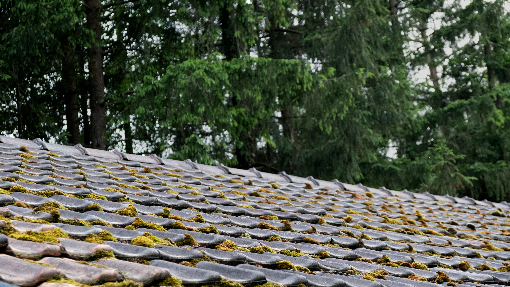

Nettoyage & Démoussage de Toiture Béziers
SAR Nettoyage est votre spécialiste du nettoyage de toiture et démoussage de toiture à Béziers et dans tout l'Hérault. Nous éliminons mousses, algues et lichens pour redonner éclat et étanchéité à vos tuiles.

SAR Nettoyage
Démoussage doux & finition maîtrisée
Pourquoi Choisir Ce Service ?
Démoussage en douceur
Méthode adaptée pour préserver les matériaux et les joints.
Résultat durable
Nettoyage complet + options de protection pour limiter la repousse.
Sécurité du chantier
Protection des abords, accès sécurisé et nettoyage des résidus.
Devis gratuit
Estimation claire après diagnostic, sans engagement.
Notre Expertise Nettoyage de Toitures
Une toiture encrassée ou recouverte de mousse accélère la porosité et le vieillissement des tuiles. À Béziers et sous le climat humide de l'Occitanie, la mousse de toit, les algues vertes et les lichens s'installent rapidement.
Chez SAR Nettoyage, nous réalisons d'abord un diagnostic gratuit de l'état de vos tuiles. Ensuite, nous appliquons une méthode de démoussage de toiture adaptée et sécurisée. Nous utilisons des traitements anti-mousse professionnels biodégradables qui pénètrent le support en profondeur pour éliminer les racines des végétaux sans abîmer les joints de dilatation ni fragiliser les tuiles.
Nos équipes de couvreurs-nettoyeurs protègent soigneusement le chantier (bâches sur la végétation, récupération des résidus de mousse). Le rinçage s'effectue à basse pression (soft wash) ou moyenne pression contrôlée pour respecter les matériaux. Nous recommandons toujours un traitement hydrofuge de toiture complémentaire pour imperméabiliser la surface et empêcher la réapparition des mousses.
Confiez votre entretien de toiture à une entreprise locale de confiance. Contactez-nous pour un devis gratuit de nettoyage de toiture à Béziers et dans un rayon de 30 km.
Surfaces & Situations
Nous intervenons partout en Occitanie. Contactez-nous pour vérifier la disponibilité dans votre secteur.
Comment Ça Marche ?
Diagnostic toiture
Évaluation du revêtement, des zones encrassées et des points sensibles (joints, gouttières, accès).
Sécurisation & préparation
Mise en place des protections, accès sécurisés et protection des évacuations.
Démoussage & nettoyage
Brossage contrôlé et nettoyage adapté pour retirer algues, mousses et résidus.
Finition & conseils
Rinçage maîtrisé, inspection visuelle et recommandations d'entretien (option hydrofuge).
La Qualité SAR Nettoyage
Produits Sûrs
Non toxiques, respectueux des surfaces et adaptés aux foyers.
Rapidité
Devis sous 15 minutes et intervention planifiée rapidement.
Garantie 100%
Pas satisfait ? Nous revenons gratuitement corriger le résultat.
Nos Autres Services
Besoin de nettoyage de toitures ?
Obtenez votre devis gratuit personnalisé. Notre équipe vous rappelle en moins de 15 minutes.